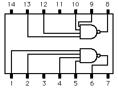

IC7420 Dual 4-Input NAND Gate

The 7420, 74H20, 74S20, 74LS20 share this geometry and function.
Basic Gates
NAND Gate
Index
Electronics concepts
Digital Circuits
HyperPhysics
*****
Electricity and magnetism
R Nave
Go Back